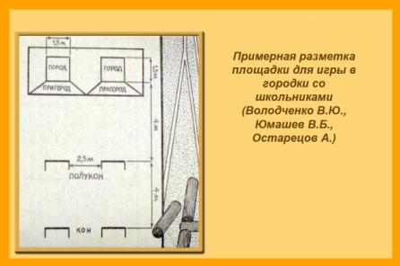

Как подготовить площадку к игре в городки?
Начертите на площадке линии, которыми Вы обозначите два города, расположенные рядом, но на некотором расстоянии друг от друга (см. рисунок). Отступив от городов на 3 метра (это расстояние дано для игры с детьми, можно его увеличивать), нарисуйте черту, с которой игроки будут метать биту. Это полукон.

Далее отступите еще несколько метров и начертите линию — кон (расстояние от полукона до кона примерно 3 метра).
Размеры площадки нужно выбирать в зависимости от возраста детей. Чем меньше дети – тем меньше размер площадки и тем меньше расстояние до города от черты полукона и кона.